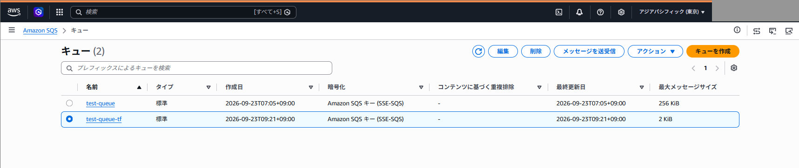
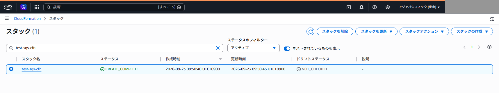
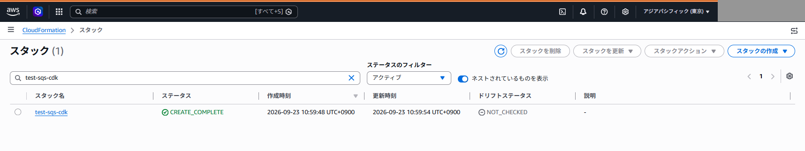

IaCによるリソースのデプロイ
VS Codeの統合ターミナル（PowerShell）で実施。認証設定はIAM Identity Center、拡張機能・整形設定はVS Codeの設定を参照
実行場所・接続先の確認
① Ctrl + Shift + `で新しいターミナルを開き、現在のフォルダーを確認。エディターで開いているファイルとターミナルの実行場所は別
pwd② 使用するAWSプロファイルと東京リージョンを、このターミナルに設定
$env:AWS_PROFILE = "iac-admin"
$env:AWS_REGION = "ap-northeast-1"
$env:AWS_DEFAULT_REGION = "ap-northeast-1"③ 接続先アカウント・ロールを確認。意図した学習用アカウントでない場合はデプロイを中止
aws sts get-caller-identity --profile iac-admin④ SSOセッションの期限が切れている場合のみ、再ログインして③を再実行
aws sso login --profile iac-admin各タブは別々のSQSキューを作成。既存の本番スタックやCDKToolkitは変更・削除しない。各方式のデプロイ操作ではAWSリソースが作成され、利用状況に応じた料金が発生
デプロイ方法
1. 作業フォルダー・ファイルの準備
① 作業フォルダーを用意して移動。既存のフォルダーはそのまま使用
New-Item -ItemType Directory -Force C:\Users\hsmts\IaC\Terraform
cd C:\Users\hsmts\IaC\TerraformVS Codeのエクスプローラーで上記フォルダーにmain.tfを作成し、次を記載してCtrl + Sで保存
resource "aws_sqs_queue" "my_queue" {
name = "test-queue-tf"
max_message_size = 2048
tags = {
Name = "test-queue-tf"
}
}2. 初期化・検証
① AWSプロバイダーを導入。.terraformと.terraform.lock.hclが生成され、再実行時は既存のプロバイダーを再利用
terraform init② 設定を検証し、成功メッセージを確認
terraform validate③ 作成予定を確認。今回の構成では1 to add, 0 to change, 0 to destroyで、対象名がtest-queue-tfであることを確認
terraform plan3. デプロイ・結果確認
① 再表示される変更内容を確認し、承認する場合はyesを入力。空欄のまま確定するとキャンセル
terraform applyApply complete! Resources: 1 added, 0 changed, 0 destroyed.作成後はterraform.tfstateに管理情報を記録。状態ファイルは削除せず、認証情報を含む可能性があるため公開リポジトリへ登録しない
② AWSコンソールでAmazon SQSを開き、東京リージョンのtest-queue-tfと最大メッセージサイズ2 KiBを確認

4. エラーと対処
| 表示・症状 | 対処 |
|---|---|
| Terraform initialized in an empty directory! | main.tfのあるフォルダーへ移動して再実行。空フォルダーのvalidate成功だけでは対象ファイルを検証したことにならない |
| PowerShellでls -laが失敗 | Get-ChildItem -Forceまたはls -Forceを使用 |
1. 作業フォルダー・ファイルの準備
① 実習で使用した既存フォルダーへ移動。フォルダー名は実際の表記CloudFromationに合わせる
New-Item -ItemType Directory -Force C:\Users\hsmts\IaC\CloudFromation
cd C:\Users\hsmts\IaC\CloudFromation同フォルダーにtest-sqs-cfn.ymlを作成し、次を記載して保存。字下げはスペースを使用
Resources:
MyQueue:
Type: AWS::SQS::Queue
Properties:
QueueName: test-queue-cfn
MaximumMessageSize: 2048
Tags:
- Key: Name
Value: test-queue-cfn2. 検証
① 保存したファイル名を指定してテンプレート形式を検証。"Parameters": []はパラメーター定義がないことを示す正常な応答
aws cloudformation validate-template --template-body file://test-sqs-cfn.yml --profile iac-admin --region ap-northeast-13. デプロイ・結果確認
① 学習用スタックtest-sqs-cfnをデプロイ。このコマンドは確認入力を求めずに作成・更新を実行
aws cloudformation deploy --template-file test-sqs-cfn.yml --stack-name test-sqs-cfn --profile iac-admin --region ap-northeast-1② デプロイ時と同じスタック名で状態を確認。初回作成ではCREATE_COMPLETEを確認
aws cloudformation describe-stacks --stack-name test-sqs-cfn --query "Stacks[0].StackStatus" --output text --profile iac-admin --region ap-northeast-1③ AWSコンソールのCloudFormationでtest-sqs-cfnを検索し、作成完了を確認

4. エラーと対処
| 表示 | 原因・対処 |
|---|---|
| No such file or directory: template.yaml | 実際のファイル名はtest-sqs-cfn.yml。コマンドの名前を合わせる |
| YAML not well-formed | Properties配下の項目を一段深くし、TagsのKeyとValueをそろえる。保存後に再検証 |
| Stack with id iac-study-sqs-cfn does not exist | 最終的に作成したスタック名はtest-sqs-cfn。確認時も同じ名前を指定 |
1. プロジェクトの初期化
① 既存のCDKフォルダーへ移動し、隠しファイルを含めて内容を確認
cd C:\Users\hsmts\IaC\CDK
Get-ChildItem -Force② 初回のみ、空フォルダーでTypeScriptのひな形を作成。先に作ったファイルがある場合は別の場所へ退避。既にcdk.jsonとpackage.jsonがある初期化済みプロジェクトでは再実行しない
cdk init app --language typescriptAll done!と、bin・lib・cdk.json・package.jsonの生成を確認
| ファイル | 編集する内容 |
|---|---|
| lib/cdk-stack.ts | SQSなどのリソース定義 |
| bin/cdk.ts | アプリの起動・スタックの識別名 |
| cdk.json | CDKアプリの実行方法。初期化で生成される設定を使用 |
2. SQS・スタック名の定義
lib/cdk-stack.tsを次の内容にして保存。クラス名はCdkStackのまま使用
import * as cdk from "aws-cdk-lib";
import * as sqs from "aws-cdk-lib/aws-sqs";
import { Construct } from "constructs";
export class CdkStack extends cdk.Stack {
constructor(scope: Construct, id: string, props?: cdk.StackProps) {
super(scope, id, props);
const queue = new sqs.Queue(this, "MyQueue", {
queueName: "test-queue-cdk",
maxMessageSizeBytes: 2048,
});
cdk.Tags.of(queue).add("Name", "test-queue-cdk");
}
}bin/cdk.tsでは、既存のnew CdkStackの第2引数をtest-sqs-cdkへ変更して保存。最小構成は次のとおり。既存の環境設定がある場合は保持
#!/usr/bin/env node
import * as cdk from "aws-cdk-lib/core";
import { CdkStack } from "../lib/cdk-stack";
const app = new cdk.App();
new CdkStack(app, "test-sqs-cdk", {});クラス名はCdkStack、CDKの識別名・今回のAWSスタック名はtest-sqs-cdk、キュー名はtest-queue-cdk
3. テンプレート・対象名の確認
① CDKが認識するスタック名を確認。test-sqs-cdkと表示されなければ、bin/cdk.tsの変更・保存を確認して中止
cdk list --profile iac-admin② CloudFormationテンプレートへ変換。出力にAWS::SQS::Queueとtest-queue-cdkがあることを確認。synthだけではデプロイされない
cdk synth --profile iac-admin③ 東京リージョンの既存ブートストラップを確認。今回の環境はCDKToolkitが作成済みのため、再作成せず使用。別の業務環境で存在しない場合は、管理者の方針に従って別途準備
aws cloudformation describe-stacks --stack-name CDKToolkit --query "Stacks[0].StackStatus" --output text --profile iac-admin --region ap-northeast-1④ 変更内容を確認。意図しない変更・削除があればデプロイを中止
cdk diff test-sqs-cdk --profile iac-admin4. デプロイ・結果確認
デプロイ済みのスタックの識別名を変更すると別スタックとして扱われる。旧スタックに同名キューが残っている場合は衝突するため、そのままデプロイしない
① 対象スタックを指定してデプロイ。イベントをターミナルへ表示し、承認確認が表示された場合は内容を確認して回答
cdk deploy test-sqs-cdk --profile iac-admin --progress events② 作成後の状態を確認。初回デプロイではCREATE_COMPLETEを確認
aws cloudformation describe-stacks --stack-name test-sqs-cdk --query "Stacks[0].StackStatus" --output text --profile iac-admin --region ap-northeast-1③ AWSコンソールのCloudFormationでtest-sqs-cdkを検索し、作成完了を確認

5. エラーと対処
| 表示・症状 | 原因・対処 |
|---|---|
| cdk init cannot be run in a non-empty directory | 手動作成したtest-sqs-cdk.tsが存在。必要な内容を退避し、空フォルダーで初期化 |
| --app is required | 初期化が失敗しcdk.jsonがない、または実行場所が違う。cdk.jsonのあるプロジェクト直下で実行 |
| maxMessageSizeBites does not exist | 実習環境の正しいプロパティはmaxMessageSizeBytes。BitesではなくBytes |
| No stacks match the name(s) test-sqs-cdk | bin/cdk.tsの第2引数がCdkStackのまま。保存後、cdk listで確認 |
| クラス名をtest-sqs-cdkに変更してエラー | TypeScriptのクラス名にハイフンは使用不可。クラス名とスタック識別名を分ける |
| npmのallow-scripts警告 | 初期化完了とsynthの成功を確認。必要性を調べずにインストールスクリプトを一括許可しない |